Neo-Hookean → 9 + 1 rows → SVD stretch
Contents
- Neo-Hookean → 9 + 1 rows → SVD stretch
- Hydrostatic term: the one scalar volume constraint
- 1. Start with the original material energy
- 2. Complete the square: obtain 9 + 1 scalar rows
- 3. Turn each energy row into a compliant ALM constraint
- 4. Apply that derivation to the current 9 + 1 scheme
- 5. Use SVD: 9 stretch entries become 3 principal stretches
- 6. SVD supplies a stretch tensor: the recommended 6 + 1 rows
- 7. Derive the force of the stretch constraint
- 8. What changes in the solve, and what stays the same
- Source and scope
The derivation of our elasticity ALM, starting from the material energy and ending at the proposed stretch constraint.
recommended history representation
What is exact? Rewriting the current solver’s energy in matrix, singular-value, or stretch-tensor form is exact, up to constants. The first step below—from classical logarithmic Neo-Hookean to the current solver’s quadratic volume model—is an approximation near rest and a continuation to inverted configurations.
This page derives the proposal. The production stage-1 code still uses pressure-only ALM by default when elasticity ALM is enabled; its optional full mode uses matrix history. The SVD/stretch mode remains an exploration. Code walkthrough · SVD experiments
Hydrostatic term: the one scalar volume constraint
This is the +1 in both 9 + 1 and the SVD formulation. It depends only on signed volume J = det F. SVD changes the stretch rows; this row stays the same.
The current material’s volume-dependent energy density is:
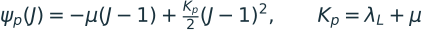
Complete the square to obtain one scalar residual:
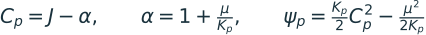
The constant has no effect on forces. For a tet, multiply this density by rest volume V₀. Do not replace this row with J − 1 while dropping the −μ term: that would remove the stress that balances the μ stretch term at rest.
Hydrostatic ALM, explicitly
Introduce a scalar material variable zp and enforce Cp = zp. With scalar multiplier ℓp and penalty ρp, use:
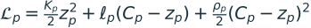
Minimizing over zp gives its exact local solution:
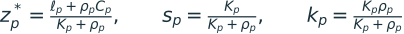
The resulting scalar stress coefficient during the position solve, and the multiplier update after a full sweep, are:
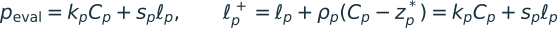
The first Piola stress contribution is peval cof F. Converting it to Cauchy stress shows why it is hydrostatic:
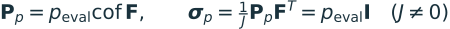
Here positive peval means tensile mean stress; conventional compression-positive pressure has the opposite sign. The cofactor form remains evaluable at J = 0 even though Cauchy stress does not.
At a converged multiplier, the original volume response is recovered:
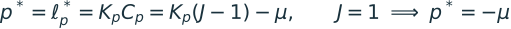
Thus rest has −μI from the hydrostatic term and +μI from the stretch term, giving zero total stress. This is a finite-stiffness elastic equality; its multiplier can have either sign. It has no nonnegative contact-pressure clamp.
1. Start with the original material energy
For one tetrahedron, F is its 3 × 3 deformation gradient, J is its signed volume ratio, and V₀ is its rest volume. Energy density is energy per rest volume. We omit damping and inertia while deriving the elastic terms.
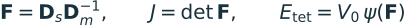
One common compressible Neo-Hookean model is:
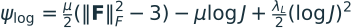
Here μ is the shear modulus and λL is the first Lamé parameter. The subscript distinguishes the material parameter from ALM multipliers. This logarithmic energy requires J > 0. Smith, de Goes & Kim (2018), Eq. 5.
The quadratic volume model used by our code
Let q = J − 1 be the volume change from rest. Expanding only the logarithmic volume contribution to second order gives:
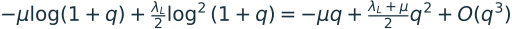
Define the volume-row stiffness Kp = λL + μ and retain that quadratic polynomial:
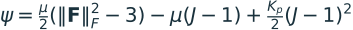
This is the stable quadratic-determinant model implemented in this worktree. It matches the classical model’s linear elastic response near rest, but gives a different material response at finite volume change. It stays finite at J = 0 and J < 0. It corresponds to the paper’s Eq. 13 with the reparameterization discussed in §3.4; the paper’s final Eq. 14 adds another term that our code does not use. Original derivation.
2. Complete the square: obtain 9 + 1 scalar rows
The linear volume term can be absorbed into a shifted volume target. Set:
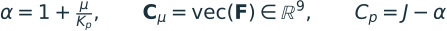
Expanding the square on the right verifies the equality:
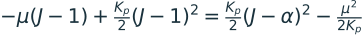
Therefore:
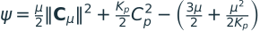
This is the 9 + 1 formulation: nine entries of F describe the stretch energy, and one determinant residual describes the volume energy. These are ten scalar energy rows, not ten independent geometric degrees of freedom: J is already determined by F.
Why the targets are F = 0 and J = α, rather than F = I and J = 1
Each energy term has its own preferred state. The μ term alone wants to shrink F. The shifted volume term counteracts that shrinkage. Their combined stress vanishes at rest:
Replacing the μ row with F − I, or later with singular values minus one, would change the material law. Also, ALM here will not impose F = 0 as a hard constraint. The next step explains what the equality constraint actually means.
Which term is deviatoric, and which is hydrostatic?
The μ part is the stretch term; the determinant part is the volume/pressure term. The μ part is often called “deviatoric” in solver code, but it is not a strictly volume-preserving energy: uniform scaling changes its value too.
For invertible F, converting the pressure contribution to Cauchy stress gives pI, with p = Kp(J − α), so that contribution is purely hydrostatic. The μ contribution is μFFᵀ/J and generally has both shear and hydrostatic parts. Their cancellation at rest is essential.
3. Turn each energy row into a compliant ALM constraint
Take any row vector C(x) with material stiffness K. It can be one scalar volume row or the whole μ block. Introduce an auxiliary material variable z, and require it to equal the value computed from vertex positions x:
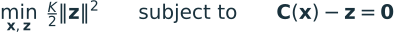
Substituting z = C(x) recovers the original row energy exactly. In a simulation, this row sits alongside all other elastic rows and the inertial objective. The equality ties geometry to a deformable material variable. It does not require C(x) = 0.
Using multiplier ℓ and penalty ρ > 0, the augmented Lagrangian density is:
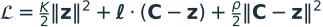
For fixed positions and multiplier, solve for z analytically:
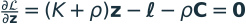
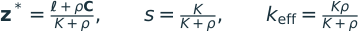
Substitute z* back into the Lagrangian. This produces the objective used during the position solve, with the multiplier held fixed:
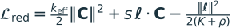
The last term is constant with respect to vertex positions. Differentiating the other two terms gives an effective row stress t. The dual update has exactly the same expression:
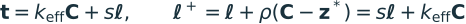
In our VBD scheme, evaluate the force using the current C and frozen history throughout a full color sweep; update the stored multiplier after that sweep. Eliminate z during each evaluation. Holding an old z fixed instead would produce a different primal curvature, ρ.
Why this recovers the original material
At a fixed point of the multiplier update:
Thus the row has the original material stress at a fixed point, while its temporary solve can use a smaller stiffness. Finite iterations produce a different response; fixed-point consistency alone does not prove convergence.
4. Apply that derivation to the current 9 + 1 scheme
Use a matrix multiplier ΛF for the nine μ rows, and scalar multiplier ℓp for the pressure row. Compute separate s and k coefficients using K = μ or K = Kp, respectively.
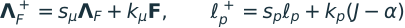
At equilibrium ΛF = μF and ℓp = Kp(J − α), so the original stress is recovered. All multipliers and penalties here use energy-density units; multiply the complete material contribution by V₀ when assembling tet energy and vertex forces.
The reason to explore SVD: old matrix history remembers rotation
Start at rest with ΛF = μI and ℓp = −μ. Rotate the tet to F = R while keeping history fixed for the next primal solve. J is still one. The pressure contribution becomes −μR, but the matrix history term still points along I:
That is an artificial force under a rigid rotation at finite ALM iteration count. The material energy itself is rotation-invariant; the temporary matrix-history objective is not. We want a history variable that does not change when the body rotates.
5. Use SVD: 9 stretch entries become 3 principal stretches
Factor F using an ordinary SVD:
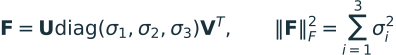
Left and right multiplication by orthogonal matrices preserves the Frobenius norm. Therefore the same target energy can use only three μ rows:
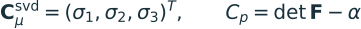
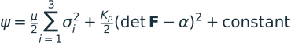
This is the exact 3 + 1 energy representation. The singular values themselves are the rows, not σ − 1. Keep the pressure row’s signed determinant: an ordinary SVD has nonnegative singular values, whose product is |J|. Warp can use a signed final singular value; evaluating det F directly avoids relying on that convention.
Away from repeated or zero singular values, the μ stress with three retained scalar multipliers is:
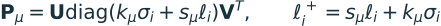
At equilibrium ℓᵢ = μσᵢ, giving Pμ = μF. It removes the rotated-rest problem when the scalar histories agree.
Why three sorted histories are not our final recommendation
Suppose two principal stretches cross. “Largest singular value” switches from one material direction to another. If those sorted slots carry different multipliers, their stored stresses switch directions too. The resulting force can jump even though the target material energy is smooth. Equal singular values also admit arbitrary basis choices.
The remedy we explored is to retain the whole symmetric stretch-history tensor in material coordinates. Its eigenvalues still come from SVD, but its history does not attach to an arbitrary sorted slot.
6. SVD supplies a stretch tensor: the recommended 6 + 1 rows
The right stretch tensor is the positive-semidefinite square root of FᵀF. To make its derivative well-defined at collapsed configurations too, use a fixed positive regularization ε:
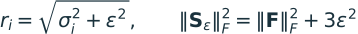
The second equality follows by taking the trace of Sε². Fixed ε adds only a constant to the target μ energy, so its physical force stays exactly μF. This remains true for inverted F; it does not depend on the sign convention of the SVD.
A symmetric 3 × 3 matrix has six independent components. To turn its Frobenius norm into the ordinary norm of a six-vector, give the off-diagonal entries a √2 weight:
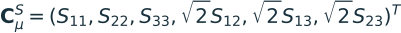
Here S abbreviates Sε. The weights count each symmetric off-diagonal pair twice, as the full matrix norm does. A full symmetric mat33 using Frobenius inner products already does this correctly.
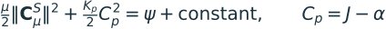
This is 6 + 1 independent stored tensor components, rather than the 3 + 1 scalar-slot representation. We retain material directions in the history. A prototype can reuse the existing nine-float matrix allocation while enforcing symmetry.
Under any superposed rigid rotation Q, (QF)ᵀ(QF) = FᵀF. Consequently S is unchanged. Reordering the SVD columns also leaves the reconstructed S unchanged.
7. Derive the force of the stretch constraint
Use a symmetric material multiplier Λ. Applying the same compliant ALM elimination from Section 3 gives:
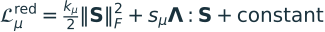
The colon means the sum of corresponding matrix-entry products. The first energy term differentiates directly to kμF because ‖S‖² and ‖F‖² differ only by a constant. The history term needs the derivative of S.
Differentiate the square-root identity
Differentiate S² = FᵀF + ε²I, holding ε fixed:
Introduce the symmetric matrix X satisfying a local Sylvester equation:
Then move the differential through the Frobenius product:
So the exact first Piola stress for the frozen-history stretch objective is:
X does not require a global solve. In the SVD basis, the Sylvester equation is just entrywise division:
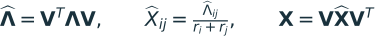
The denominators are sums, so repeated positive stretches cause no singularity. Positive ε also protects zero stretches. The force derives from S itself and is independent of the arbitrary SVD basis. The square-root differential is standard; the ALM substitution and stress above are our derivation. Bisson & Pennec, stretch differential.
Verify the original μ force is recovered
At an ALM fixed point, Λ = μS. Substituting into the Sylvester equation gives X = μI/2:
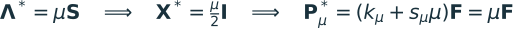
With the pressure row included, the complete stress is:
At equilibrium this is precisely the stress from Section 2. For a rigidly rotated rest state with equilibrium history, it gives zero total stress. With arbitrary fixed material history, it remains objective: rotating F rotates P in the same way. This does not remove physical torques caused by real deformation.
8. What changes in the solve, and what stays the same
| Representation | μ rows / history | Target μ energy | Finite-iteration issue |
|---|---|---|---|
| Matrix ALM | 9 entries of F | Original | Retained spatial history produces the rotated-rest artifact. |
| Scalar SVD ALM | 3 singular values | Original | Unequal sorted histories can jump between material directions. |
| Proposed stretch ALM | 6 independent entries of Sε | Original plus a constant | Smooth objective history; additional local derivative work and stiff behavior near collapse need testing. |
All three use the same scalar pressure row Cp = J − α. None introduces a new global linear system or a new coloring. The proposed mode computes SVD and local matrix operations per tet evaluation and retains the existing sweep/dual-update schedule.
Same target material does not mean the same temporary Hessian. During a primal solve Λ is fixed. Do not substitute Λ = μS(F) before taking derivatives: that would incorrectly let the history move with a trial vertex displacement.
Exact local tangent for implementation
For a trial deformation-gradient change A, differentiate S and X with the multiplier fixed:
Both Sylvester solves reuse the current SVD basis and the same positive denominators. For vertex a, let wa be its rest shape-function gradient. A trial displacement u gives A = uwaᵀ. The force is −V₀Pwa, and the elastic energy Hessian action is V₀DP[A]wa.
The exact frozen-history block can be indefinite, and small ε can make it stiff near collapse. The prototype therefore needs a suitable local-block stabilization and finite-iteration simulation checks. SVD alone does not settle those choices.
Source and scope
This derivation follows the stage-1 code in newton/_src/solvers/vbd/particle_vbd_kernels.py, especially evaluate_volumetric_neo_hookean_force_and_hessian_alm, and the multiplier lifecycle in particle_alm_kernels.py, at implementation commit 246fb405. The document uses density conventions consistently and omits damping, inertial terms, and unrelated contact constraints. It describes the material equations with numerical denominator guards inactive; the current code floors the denominator in the pressure offset at 10⁻⁶, which changes that offset for exceptionally small positive Kₚ.
The coefficient conversion and classical/stable material distinction are grounded in Smith, de Goes & Kim, Stable Neo-Hookean Flesh Simulation (2018), Eqs. 5, 13 and §3.4. The ALM lifting, history comparison, and regularized stretch proposal are derived here. Existing numerical evidence is in the SVD exploration report.